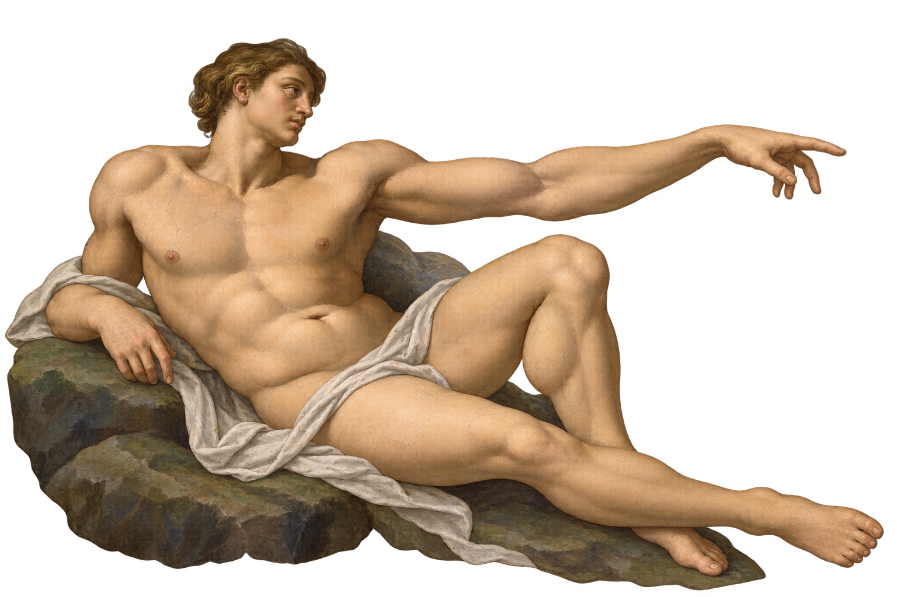
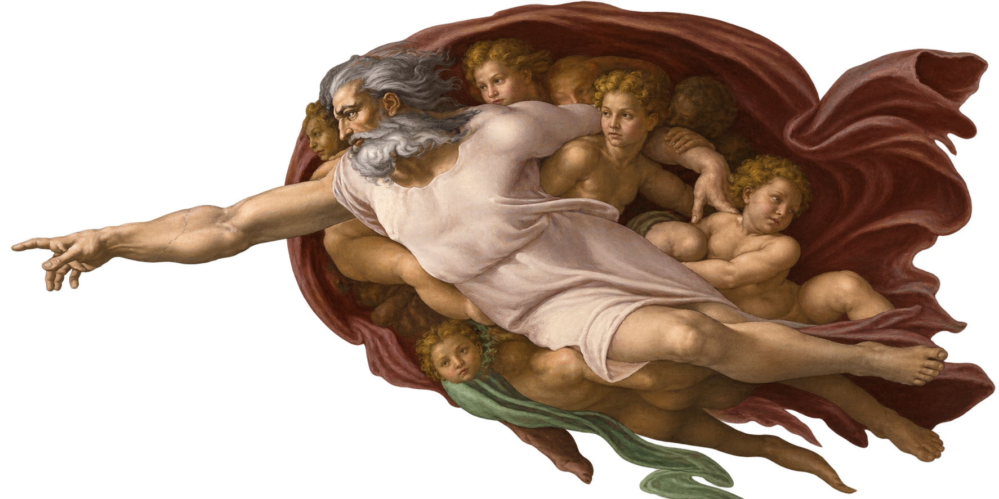

Objectif : relier le scroll aux déplacements verticaux des couches.
Kata JS
Parallax scroll
Faites défiler la page : chaque couche de la fresque doit se déplacer avec son propre facteur de vitesse.


Kata JS
Faites défiler la page : chaque couche de la fresque doit se déplacer avec son propre facteur de vitesse.


Objectif : relier le scroll aux déplacements verticaux des couches.